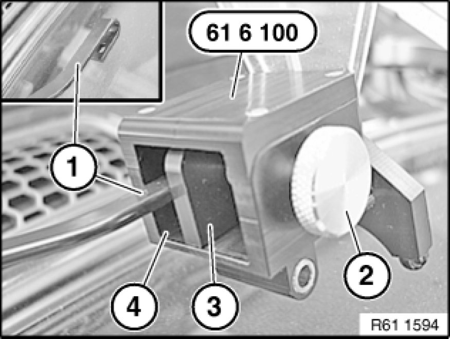

Checking/Adjusting Contact Angle of Windscreen Wiper Arms on Windscreen
61 61 010 - Checking/adjusting contact angle of windscreen wiper arms on windscreen

Special tools required:
- 00 9 220 00 9 220 Bending Lever (2 X)
- 00 9 331 00 9 330 Windscreen Wiper Setting Tool
- 61 6 100 61 6 100 Angle Measuring Instrument

Note:
Wipe quality is improved by precise adjustment of contact/approach angle Adjusting Left or Right Windscreen Wiper of wiper arms.
Adjustment angle can be checked with special tool 00 9 331 00 9 330 Windscreen Wiper Setting Tool or 61 6 100 61 6 100 Angle Measuring Instrument.
Checking with setting gauge:
Before checking approach angle, briefly lift windscreen wiper arms off windscreen.
Place special tool 00 9 331 00 9 330 Windscreen Wiper Setting Tool next to pivot point of wiper blade on windscreen.
Check light gap, adjust wiper arm if necessary.
Note:
Tape off wiper arm with fabric adhesive tape to avoid damage.
Press special tools 00 9 220 00 9 220 Bending Lever (2 X) in appropriate direction until correct contact/approach angle is obtained.

Checking with angulometer:
Remove wiper blades.
Insert windscreen wiper arm (1) in angulometer 61 6 100 61 6 100 Angle Measuring Instrument.
Using screw (2) and pressure plate (3), locate windscreen wiper arm (1) and position on windscreen.
Read off value in degrees, adjust wiper arm if necessary.
Note:
Windscreen wiper arm (1) must rest correctly on lower and side contact surfaces (4) of angulometer 61 6 100 61 6 100 Angle Measuring Instrument.
On right-hand-drive cars, screw (2) must be located on left side of special tool 61 6 100.
Press special tools 00 9 220 00 9 220 Bending Lever (2 X) in appropriate direction until correct contact/approach angle is obtained.